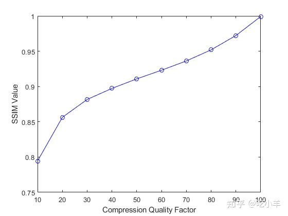

Home
本示例显示如何使用ssim测试图片质量。示例以各种压缩级别创建图像，然后绘制质量指标。要运行此示例，您必须对当前文件夹具有写入权限。
将图像读入工作区。
I = imread('cameraman.tif');
使用各种质量值将图像写入文件。JPEG 格式支持该'quality'参数。使用ssim函数检查每个写入图像的质量。
ssimValues = zeros(1,10);
qualityFactor = 10:10:100;
for i = 1:10
imwrite(I,'compressedImage.jpg','jpg','quality',qualityFactor(i));
ssimValues(i) = ssim(imread('compressedImage.jpg'),I);
end
绘制结果。请注意，当您通过imwrite增加指定的质量值时，图像质量分数如何提高。
plot(qualityFactor,ssimValues,'b-o');
xlabel('Compression Quality Factor');
ylabel('SSIM Value');

======================================================================
我的测试结果及程序
下面是我测试的代码：

注：本文根据MATLAB官网内容修改而成。